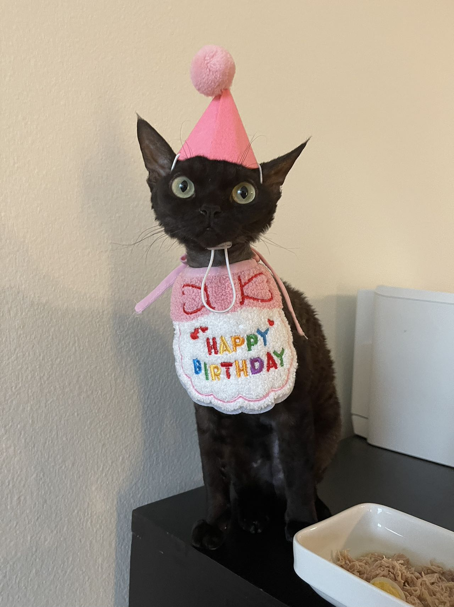
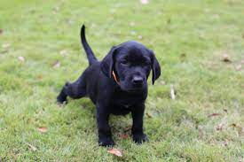
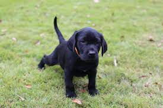

Owner Information
Kai Liu
Travel Enthusiast
Amateur Architect & Amateur Tennis Player
Art Aficionado & Van Gogh Admirer
Introduction
Sprout, a shy and elusive kitten when he first arrived at four months old, gradually became an affectionate companion. He enjoyed sleeping on my bed, but his early morning wake-up calls at 6:30 AM were a daily routine.
During my challenging academic phase, Sprout became my constant companion during late-night drawing sessions, quietly curling up on my lap, providing comfort and banishing solitude.


Sprout's Friends
He enjoys playing together with his good friend--Naer
Sprout and Naer share a magical bond in their little kingdom, embodying a perfect blend of tranquility and playfulness.
Naer is the energizing force, his infectious spirit bringing smiles and laughter as he explores every nook and cranny with ceaseless curiosity. Together, they are more than pets; they are family.
Their synchronized purrs at dusk narrate tales of a deep friendship that is pure, unconditional, and beautifully serene, illuminating their home with love and vibrancy.

Sprout's Hobbies
He likes to share his favorite toy with me, carrying it and offering it to me
Sprout's life revolves around a singular passion - his favorite toy.
It's not just an object to him, but a symbol of love and connection. This toy,
weathered by time and play, holds countless memories of spirited chases and cozy naps.


Photo Gallery: Daily Life
Photos of Sprout when he was born with his siblings


Likes
- Egg
- Playing with Naer and my tennis string
- Sleeping in the sunshine
- Kai Liu and Mengkun
My Pet- Cody

Introduction
Cody is a 7yr old Pembroke Corgi. He was born in Cavalier Farms, Seattle. He prefers to spend his days lounging on the bean bag. Every day, he enjoys two walks around the neighborhood and likes to make friends with other doggie friends. If lucky enough, he might see the cyclist, but he is not allowed to give chase.
Cody loves traveling. He enjoys walking on the beach and taking sun naps. But he hates cold weather. He would like to stay at home lounging by the fireplace in winter.


Cody's life
Cody is the guardian spirit of their little haven, bringing a sense of security and warmth to everyone around him. His gentle eyes and wagging tail tell stories of loyalty and boundless love.
Together with Sprout and Naer, Cody forms an inseparable trio, their adventures in their little kingdom are the stuff of legends, filled with joyous barks and playful chases, creating a symphony of happiness that resonates in their loving home.
Cody is the embodiment of joy, his playful antics and boundless energy infusing their days with laughter and delight. His protective nature ensures that Sprout and Naer can explore their world with a sense of safety and freedom, under the watchful eyes of their loving canine brother.
As the day draws to a close, Cody joins Sprout and Naer in a harmonious chorus of purrs and gentle woofs, weaving tales of their daily adventures in a lullaby of love and friendship that cradles them all in a warm embrace, as they drift into dreams filled with love and togetherness.


Cody's Hobbies
He likes to share his favorite toy with me, carrying it and offering it to me with a joyous wag of his tail, his eyes sparkling with affection and trust.
Cody's life revolves around a singular passion - his favorite toy, a beacon of joy and a repository of shared memories, a simple object that embodies the deep bond we share.
It's not just an object to him, but a symbol of love and connection. This toy, a testament to our shared history, carries the essence of our bond, a tangible representation of the love and trust that defines our relationship.
Weathered by time and play, it holds countless memories of spirited chases and cozy naps, a silent witness to the beautiful journey we have shared, a journey filled with laughter, love, and the kind of joy that can only be found in the simple pleasure of being together.
Likes
- traveling
- lounging
- Tennis balls
- Yuqing Zhang
My Pet- Peddie

Introduction
Peddie, the Golden Retriever, is a charming and lively companion known for his beautiful coat and playful nature. He's a perfect partner for outdoor fun, loved for his loyalty and gentle disposition.
Peddie's intelligence and friendly demeanor make him a beloved member of his family and a source of joy for everyone who knows him.


Peddie's life
Peddie is the guardian spirit of their little haven, bringing a sense of security and warmth to everyone around him. His gentle eyes and wagging tail tell stories of loyalty and boundless love.
Together with Sprout and Naer, Peddie forms an inseparable trio, their adventures in their little kingdom are the stuff of legends, filled with joyous barks and playful chases, creating a symphony of happiness that resonates in their loving home.

Peddie's Hobbies
He likes to share his favorite toy with me, carrying it and offering it to me with a joyous wag of his tail, his eyes sparkling with affection and trust.
Peddie's life revolves around a singular passion - his favorite toy, a beacon of joy and a repository of shared memories, a simple object that embodies the deep bond we share.
It's not just an object to him, but a symbol of love and connection. This toy, a testament to our shared history, carries the essence of our bond, a tangible representation of the love and trust that defines our relationship.
Weathered by time and play, it holds countless memories of spirited chases and cozy naps, a silent witness to the beautiful journey we have shared, a journey filled with laughter, love, and the kind of joy that can only be found in the simple pleasure of being together.
Likes
- Swimming
- Running in the park
- Meeting new friends
- Yiran Zheng
My Pet- Santa

Introduction
Santa is a small black dog with a heart as big as any. Despite her small size, she has a personality that can fill a room. She has a shiny black coat that gleams in the sunlight, showcasing her radiant spirit.
She loves to explore her surroundings, always curious and full of energy. Santa has a knack for finding the coziest spots in the house to take a nap, and she enjoys the simple pleasures in life, like a good scratch behind the ears or a tasty treat.


Santa's life
Santa is the little joy-bringer in the household, always ready to offer affection and brighten up the day with her playful antics. Her small size allows her to sneak into places others can't, often leading to delightful discoveries.
She shares a deep bond with her family members, always sensing their moods and offering comfort with her warm presence. Santa has a way of making every day a bit brighter with her joyful spirit and loving nature.

Santa's Hobbies
She has a fondness for toys, especially those that squeak. Santa can spend hours playing with her favorite squeaky toy, throwing it up in the air and catching it with great enthusiasm.
When she is not playing, Santa enjoys lounging in sunny spots around the house, soaking up the warmth and watching the world go by with curious eyes.
Santa also has a little adventurous side; she loves to explore the backyard, chasing butterflies and sniffing out interesting scents, always on the lookout for a new adventure.
Despite her playful nature, Santa also enjoys quiet moments, often found snuggled up on a comfy cushion, enjoying a peaceful nap.
Likes
- Squeaky toys
- Sunny spots
- Chasing butterflies
- Peaceful naps
My Pet- Juno

Introduction
Juno is a small black dog with a curious and adventurous spirit. He has a glossy black coat that shines beautifully, reflecting his vibrant and energetic personality.
He is known for his playful demeanor, always ready to embark on a new adventure, whether it's exploring the backyard or finding the perfect spot to bury his treasures. Juno has a loving nature, forming deep bonds with his family members and bringing joy to everyone he meets.

Juno's life
Juno is the little spark of joy in the family, always bringing a smile to everyone's face with his playful antics and loving gestures. His small stature and big heart make him a delightful companion, always ready to offer a cuddle or a playful paw.
He has a way of turning even the most ordinary day into a special one, with his infectious energy and boundless enthusiasm for life. Juno is a true friend, always there to offer comfort and affection, making every moment a joyous one.
 

Juno's Hobbies
Juno has a playful spirit, enjoying a good game of fetch more than anything. He can spend hours chasing after a ball, his little legs carrying him faster than you would believe.
When he is not playing, Juno loves to find the sunniest spot in the house to take a nap, dreaming of his next adventure. He also has a fondness for treats, always performing tricks to earn a tasty reward.
Despite his energetic nature, Juno also enjoys quiet moments, often found lying on a comfy cushion, watching the world go by with a wise and thoughtful expression.
He has a curious nature, always eager to explore new places and meet new friends, making every day a new adventure.
Likes
- Playing fetch
- Sunny naps
- Tasty treats
- Exploring new places